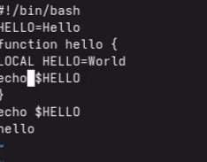
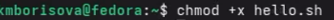
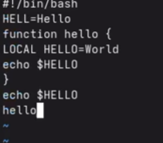

Студент НБИбд-01-25
Студент НБИбд-01-25Автор: Борисова Ксения Михайловна Преподаватель: Кулябов Дмитрий Сергеевич профессор * профессор кафедры теории вероятностей и кибербезопасности * Российский университет дружбы народов им. П. Лумумбы * kulyabov-ds@rudn.ru * https://yamadharma.github.io/ru/
Информация о докладчике
Студент НБИбд-01-25
Познакомиться с операционной системой Linux. Получить практические навыки рабо- ты с редактором vi, установленным по умолчанию практически во всех дистрибутивах.
Задание 1. Создание нового файла с использованием vi 1. Создайте каталог с именем ~/work/os/lab06. 2. Перейдите во вновь созданный каталог. 3. Вызовите vi и создайте файл hello.sh 1 vi hello.sh 4. Нажмите клавишу i и вводите следующий текст. 1 #!/bin/bash 2 HELL=Hello 3 function hello { 4 LOCAL HELLO=World 5 echo $HELLO 6 } 7 echo $HELLO 8 hello 5. Нажмите клавишу Esc для перехода в командный режим после завершения ввода текста. 6. Нажмите : для перехода в режим последней строки и внизу вашего экрана появится приглашение в виде двоеточия. 7. Нажмите w (записать) и q (выйти), а затем нажмите клавишу Enter для сохранения вашего текста и завершения работы. 8. Сделайте файл исполняемым 1 chmod +x hello.sh 74 Лабораторная работа № 8. Текстовой редактор vi 8.3.2. Задание 2. Редактирование существующего файла 1. Вызовите vi на редактирование файла 1 vi ~/work/os/lab06/hello.sh 2. Установите курсор в конец слова HELL второй строки. 3. Перейдите в режим вставки и замените на HELLO. Нажмите Esc для возврата в команд- ный режим. 4. Установите курсор на четвертую строку и сотрите слово LOCAL. 5. Перейдите в режим вставки и наберите следующий текст: local, нажмите Esc для возврата в командный режим. 6. Установите курсор на последней строке файла. Вставьте после неё строку, содержащую следующий текст: echo $HELLO. 7. Нажмите Esc для перехода в командный режим. 8. Удалите последнюю строку. 9. Введите команду отмены изменений u для отмены последней команды. 10. Введите символ : для перехода в режим последней строки. Запишите произведённые изменения и выйдите из vi
Создаю каталог
Вызываем vi и создаем файл ssh.sh
Переходим в режим ввода текста

Делаем файл исполняемым

Открываем файл снова
.png)
Заменяем файлы

Ответы на контрольные вопросы (лабораторная работа №10)
Вопрос 1. Дайте краткую характеристику режимам работы редактора vi.
Редактор vi имеет три режима работы. Командный режим предназначен для ввода команд редактирования и навигации по редактируемому файлу. Режим вставки предназначен для ввода содержания редактируемого файла. Режим последней строки (или командной строки) используется для записи изменений в файл и выхода из редактора.
Вопрос 2. Как выйти из редактора, не сохраняя произведённые изменения?
Чтобы выйти из редактора без сохранения изменений, необходимо находясь в командном режиме нажать клавишу Esc, затем нажать двоеточие, набрать символы q! и нажать Enter.
Вопрос 3. Назовите и дайте краткую характеристику командам позиционирования.
Команда 0 (ноль) осуществляет переход в начало строки. Команда $ осуществляет переход в конец строки. Команда G осуществляет переход в конец файла. Команда n G осуществляет переход на строку с номером n. Также существует команда gg для перехода в начало файла.
Вопрос 4. Что для редактора vi является словом?
Словом для редактора vi считается последовательность букв, цифр и символов подчёркивания, ограниченная пробелами, табуляцией, знаками пунктуации или началом и концом строки. При использовании прописных команд W и B под разделителями понимаются только пробел, табуляция и возврат каретки. При использовании строчных w и b под разделителями понимаются также любые знаки пунктуации.
Вопрос 5. Каким образом из любого места редактируемого файла перейти в начало (конец) файла?
Для перехода в начало файла из любого места необходимо нажать клавиши gg (дважды g) или ввести команду 1G. Для перехода в конец файла необходимо нажать клавишу G (большую букву).
Вопрос 6. Назовите и дайте краткую характеристику основным группам команд редактирования.
Основные группы команд редактирования включают: команды вставки текста (i - вставка перед курсором, a - вставка после курсора, I - вставка в начало строки, A - вставка в конец строки, o - вставка строки под курсором, O - вставка строки над курсором); команды удаления (x - удаление символа, dw - удаление слова, dd - удаление строки, d$ - удаление от курсора до конца строки); команды копирования и вставки (yy или Y - копирование строки, yw - копирование слова, p - вставка из буфера после курсора, P - вставка из буфера перед курсором); команды отмены и повтора (u - отмена последнего действия, . - повтор последнего действия); команды замены (cw - замена слова, r - замена одного символа, R - замена нескольких символов в режиме замены).
Вопрос 7. Необходимо заполнить строку символами $. Каковы ваши действия?
Необходимо в командном режиме установить курсор в начало строки с помощью команды 0, затем нажать клавишу R для перехода в режим замены, после чего нажать клавишу $ столько раз, сколько символов нужно заменить. Также можно использовать команду r$ для замены одного символа на знак доллара.
Вопрос 8. Как отменить некорректное действие, связанное с процессом редактирования?
Для отмены некорректного действия необходимо нажать клавишу u в командном режиме. Каждое нажатие u отменяет одно предыдущее действие. Для повтора последнего действия используется клавиша . (точка).
Вопрос 9. Назовите и дайте характеристику основным группам команд режима последней строки.
Команды записи и выхода: :w - сохранить файл, :w имя_файла - сохранить в новый файл, :q - выйти из редактора, :q! - выйти без сохранения, :wq - сохранить и выйти, :e! - отменить все изменения после последнего сохранения. Команды работы со строками: :n,m d - удалить строки с n по m, :n,m t k - скопировать строки с n по m в строку k, :n,m m k - переместить строки с n по m в строку k.
В ходе выполнения лабораторной работы я познакомилась с операционной системой Linux и получила практические навыки работы с текстовым редактором vi.
Я изучила три режима работы редактора: командный режим (для навигации и команд), режим вставки (для ввода текста) и режим последней строки (для сохранения и выхода). Научилась создавать новый файл командой vi hello.sh, вводить текст, сохранять изменения (:wq) и выходить без сохранения (:q!).
Выполнила основные команды редактирования: замену символов, удаление слов (dw), добавление строк (o), удаление строк (dd), отмену действий (u). Также научилась перемещаться по файлу с помощью команд G (конец файла) и 0, $ (начало и конец строки).
В результате был создан и отредактирован bash-скрипт hello.sh, который выводит на экран строки “Hello”, “World” и “Hello”. Работа с редактором vi освоена, все поставленные задачи выполнены.
ТУИС. Архитектура компьютеров и операционные системы. Раздел “Операционные системы”. Лабораторная работа №10.
https://esystem.rudn.ru/pluginfile.php/3097173/mod_resource/content/4/006-lab_proc.pdf